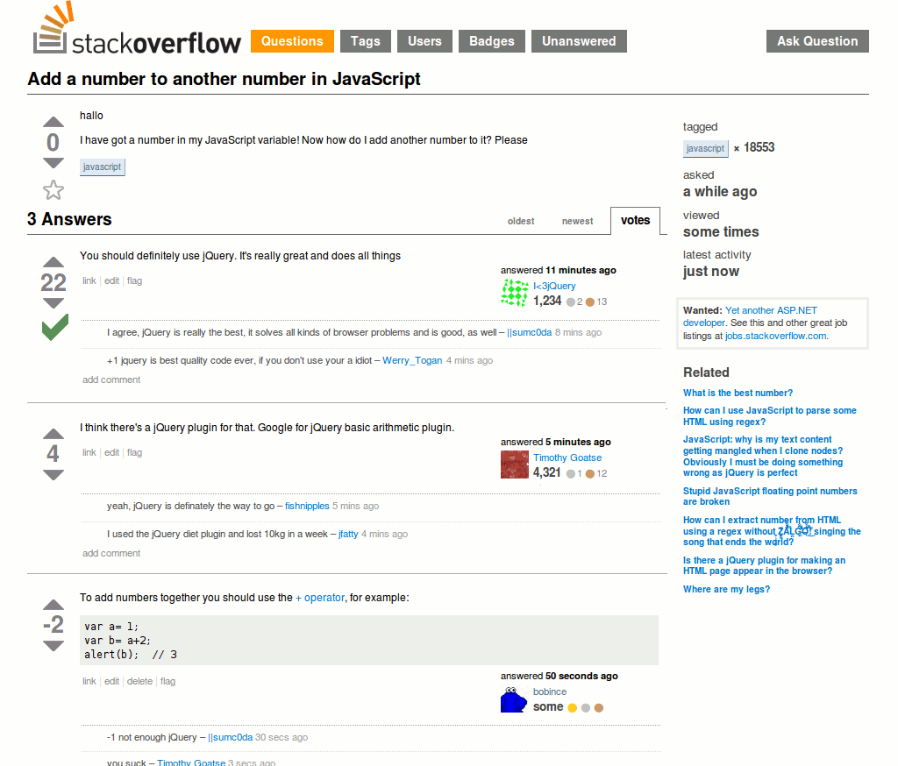

jQuery
class: center, middle .title[ Front-end training #<br> ] --- # What is jQuery? JavaScript library that simplifies the interaction between HTML and JavaScript with an easy to use API that works across a multitude of browsers ### Main features - DOM traversal and manipulation - Event handling - Ajax - Animations - Extensibility through plugins --- # The focus of jQuery ``` js $('#purchase_btn').addClass('focal'); ``` - `$()` - call jQuery - `'#someid'` - get elements with css like selector - `.addClass()` - do something to selected elements --- # Selectors jQuery accepts all css 2, 3 selectors and even more ### Basic `*, elementTag, #id, .class` ### Hierarchy `ancestor descendant, parent > child, prev + next, prev ~ siblings` ### Filters `:even, :odd, :first, :last, :not(), :empty` `:gt()` - all elements at an index greater then specified `:lt()` - all elements at an index less then specified `:hidden` - display: none, type="hidden", width & height = 0, ancestor is hidden `:visible` - are visible `:parent` - are parents to other elements, including text node `:contains()` - contain the specified **text** `:has()` - contain at least one element that matches the specified **selector** --- # More Selectors ### Attribute `[name], [name|='value'], [name*='value'], [name~='value'], [name$='value'], [name^='value']` `[name!='value']` - either no such *attribute* or specified **value** ### Child filters `:first-child, :last-child, :only-child, :first-of-type, :last-of-type, :only-of-type, :nth-child(), :nth-last-child(), :nth-last-of-type(), :nth-of-type()` ### Forms `:button, :checkbox, :file, :image, :input, :password, :radio, :reset, :submit, :text` `:disabled, :enabled, :focus, :checked, :selected` --- # Traversing Though traversing is quite a powerfull tool, it is wiser not to abbuse it too much. Overcomplicated selectors are hard to understand and affect performance. Note: `find()` is an exception, sometimes gives performance benefits `is(), not(), has()` `eq(), first(), last()` `find(), parent(), parents(), closest()` `children(), prev(), next(), siblings()` `add(), addBack(), contents()` and a few more... --- # DOM manipulations For convenience, some of these methods work as both getters and setters. Note: some methods work with only one element ### Attributes `attr(), prop(), val()` `removeAttr(), removeProp()` Note: as lots of other methods, could be used as both getters and setters ``` js $('input').attr('type'); // "checkbox" $('input').attr('disabled', true); // [<input type="text" disabled="disabled">] ``` ### CSS `css()` - sets inline style. ( { 'top' : 5, 'right' : 4 } ) or ( 'top', 5 ) `addClass(), removeClass(), hasClass()` `toggleClass()` - $(element).hasClass(class) ? removeClass(class) : addClass(class) --- # DOM manipulations `$('<div>')` - create element `html(), text()` - get/set html/text `remove()` - removes element from DOM `append(), prepend()` - insert specified content to the end/beginning of element `after(), before()` - insert content after/before element `height(), width()` - get/set value `clone()` - create a deep copy of an element `wrap()` - wrap element with another element `detach()` - same as remove but keeps all jQuery related data and a few more... --- # Animation `hide(), show(), toggle()` `fadeOut(), fadeIn(), fadeToggle()` `slideOut(), slideDown(), slideToggle()` Note: all of these methods accept configurations, e.g {duration: 500} `animate` - animates given css properties. Note: in most cases it is wiser to use css animations as those are much faster --- # Events ### Event Handlers `on(), off(), one(), trigger(), triggerHandler()` ### Form Events `focus(), blur(), change(), select(), submit()` ### Keyboard Events `keydown(), keyup(), keypress()` ### Mouse Events `click(), dblclick(), hover()` ### Event Object `event.preventDefault(), event.stopPropagation(), event.target` Note: some events can be used as both handlers and triggers `$('input').focus(handler)` -> attaches handler onFocus `$('input').focus()` -> sets focus on input --- # Ajax ### Basic usage ``` js $.ajax({ type: 'POST', url: 'authorization.php', data: { login: 'John', password: 'gfhjkm' }, success: onSuccess, error: onError, complete: onComplete }); ``` ### Shorthand methods `$.get(), $.post()` `$.getJSON(), $.getScript()` --- # Deferred Object `$.Deferred()` - constructor function to create deferred objects `$.when()` - provide a way to execute callbacks based on one or more deferred objects `deferred.resolve()` - resolve and optionally pass data `deferred.reject()` - reject and optionally pass error `deferred.done()` - fires when deferred object is resolved `deferred.fail()` - fires when deferred object is rejected `deferred.always()` - either resolved or rejected ### Usage jqXHR object is derived from deferred object ``` js $.ajax({...}) .done(function() { /* success */ }) .fail(function() { /* error */) .always(function() { /* complete */ }); // wait for multiple tasks to be done $.when($.getJSON('users.json'), $.getJSON('rights.json')) .done(function(users, rights){ // do something when both are done }); ``` --- # Utilities `$(document).ready()` - make sure you run your code when DOM is ready `$.each()` - generic iterator function `$.extend()` - merge the content of second+ objects into first one `$.trim()` - remove whitespace from the beginning and end of a string `$.isArray(), $.isEmptyObject(), $.isFunction(), $.isNumeric()` `$.parseHTML(), $.parseJSON(), $parseXML()` --- # jQuery Plugins One of the reasons jQuery gained so much popularity is the ease of creating plugins. Which led to a huge collection of available plugins. As a tradeoff, lots of those plugins are poorly coded and rarely properly maintained. ``` js $.fn.paintMe = function(color){ this.css('background', color); return this; } $('p').paintMe('red').text('ima red!!'); ``` --- # jQuery does it all !!1! [](http://www.doxdesk.com/img/updates/20091116-so-large.gif) --- # Related resources - API/DOCS: - [http://jquery.com](http://jquery.com) - [http://oscarotero.com/jquery](http://oscarotero.com/jquery) - [http://learn.jquery.com/plugins/basic-plugin-creation](http://learn.jquery.com/plugins/basic-plugin-creation) - Learn jQuery: - [http://learn.jquery.com/about-jquery/how-jquery-works](http://learn.jquery.com/about-jquery/how-jquery-works) - [http://www.codecademy.com/en/tracks/jquery](http://www.codecademy.com/en/tracks/jquery) - [http://try.jquery.com](http://try.jquery.com) - [jQuery source code viewer](http://james.padolsey.com/jquery/#v=2.0.3&fn=) - jQuery Deferreds: - [http://javascriptplayground.com/blog/2012/04/jquery-deferreds-tutorial](http://javascriptplayground.com/blog/2012/04/jquery-deferreds-tutorial) - [http://javascriptplayground.com/blog/2012/05/your-own-jquery-deferreds](http://javascriptplayground.com/blog/2012/05/your-own-jquery-deferreds) - jQuery Books: - [jQuery: Novice to Ninja](http://www.amazon.com/jQuery-Novice-Ninja-Earle-Castledine/dp/0987153013/ref=sr_1_1?s=books&ie=UTF8&qid=1416057421&sr=1-1&keywords=jquery+ninja) - [Secrets of the JavaScript Ninja](http://www.amazon.com/Secrets-JavaScript-Ninja-John-Resig/dp/193398869X/ref=sr_1_2?s=books&ie=UTF8&qid=1416057421&sr=1-2&keywords=jquery+ninja) --- # Related resources #2 - [http://youmightnotneedjquery.com](http://youmightnotneedjquery.com) - [http://blog.garstasio.com/you-dont-need-jquery](http://blog.garstasio.com/you-dont-need-jquery) - [http://zeptojs.com](http://zeptojs.com/)